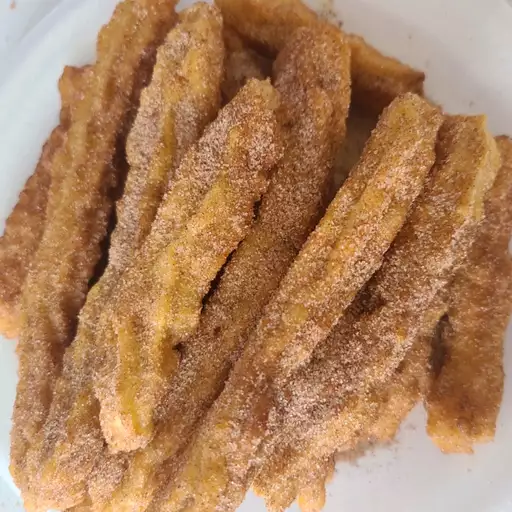

Churros 2

Churros2
Churros are a delicious Spanish dessert that have become popular all over the world. They are a type of fried dough pastry that is often eaten for breakfast or as a snack. To make churros, a simple dough is prepared from flour, water, and salt, which is then piped through a star-shaped nozzle and deep-fried until crispy and golden brown. The fried churros are then dusted with cinnamon sugar and served warm with a dipping sauce, such as chocolate or caramel. Churros can be enjoyed on their own or with a hot drink, such as coffee or hot chocolate, and are often found at street vendors, fairs, and festivals. Making churros at home is easy and can be a fun activity to enjoy with family and friends.
Ingredients
- 2 quarts vegetable oil for frying
- 1 cup water
- ½ cup margarine
- 1 cup all-purpose flour
- ¼ teaspoon salt
- 3 eggs
- ¼ cup white sugar
- ¼ teaspoon ground cinnamon
Directions
- In a heavy deep skillet or deep-fryer, heat oil to 360 degrees F (180 degrees C). Oil should be about 1 1/2 inches deep.
- In a medium saucepan, heat water and margarine to a rolling boil. Combine the flour and salt; stir into the boiling mixture. Reduce heat to low and stir vigorously until the mixture forms a ball, about 1 minute. Remove from heat and beat in the eggs one at a time. Spoon the mixture into a pastry bag fitted with a large star tip.
- Carefully squeeze out 4 inch long strips of dough directly into the hot oil. Fry 3 or 4 strips at once, until golden brown, about 2 minutes on each side. Remove from hot oil to drain on paper towels. Stir together the sugar and cinnamon; roll churros in the mixture while still hot.